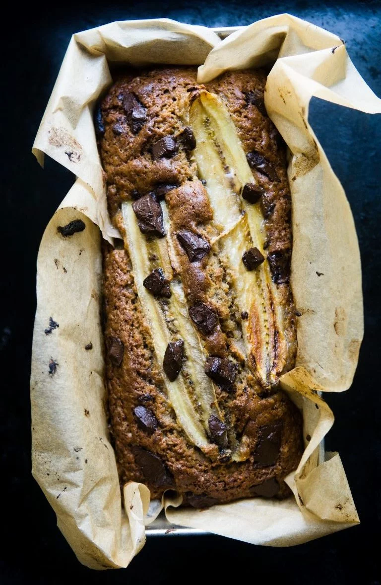
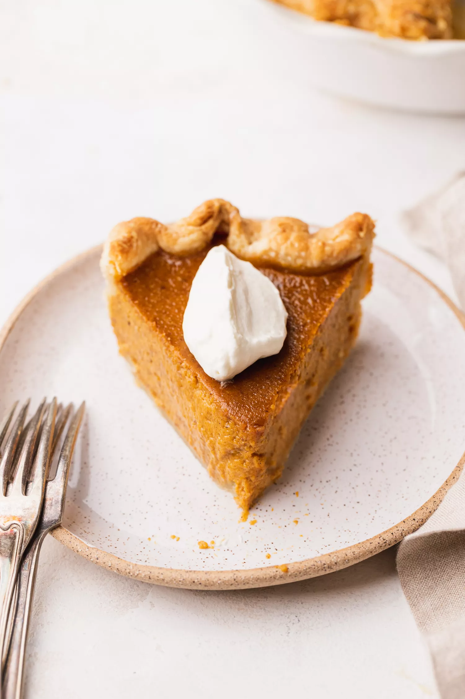

1. Preheat the oven to 350°F (180°C), and line a 4x8-inch loaf pan.
2. Mash the bananas with a fork until completely smooth in a medium bowl. Add the eggs. Stir in the butter, followed by the sugar and sour cream.
3. Combine the flour with baking soda, baking powder, salt, and cinnamon. Whisk into the banana mixture. Fold in the chocolate and/or walnuts, if using. Scrape the batter into prepared pan. Top it with the halved banana, and sprinkled with 1 tablespoon sugar.
4. Bake until golden brown and a toothpick inserted in the middle of the loaf comes out clean, 50 minutes. Turn out the banana bread and let cool completely (if you can resist) before slicing
Easy Banana bread
| QUANTITY | INGREDIENT |
|---|---|
| 220g | all-purpose flour |
| 1ts | baking soda |
| 0.5 ts | baking powder |
| 0.5 ts | salt |
| 0.5 ts | salt |
| 0.5 ts | cinnamon |
| 100g | brown sugar |
| 80g | greek yogurt |
| 2 | eggs |
| 3-4 | overripe bananas |
Easy Pumpkin Pie
| QUANTITY | INGREDIENT |
|---|---|
| 2 | large eggs |
| 1 | egg yolk |
| 1/2 cup | brown sugar |
| 0.5 ts | salt |
| 1 ts | ginger |
| 2 ts | cinnamon |
| 0.25 ts | nutmeg |
| 0.25 ts | cloves |
| 2 cups | pumpkin puree |
| 1 1/2 cups | heavy cream |
1. Preheat your oven to 425°F. Position a rack in the bottom 1/3 of the oven.
2. If using a homemade crust, line a deep-dish pie pan and freeze for at least 30 minutes (1 or 2 hours is even better). If using store-bought frozen crusts, simply unwrap them just before using. You'll need 2.
3. Beat the eggs in a large bowl. Mix in the brown sugar, white sugar, salt, cinnamon, ground ginger, nutmeg, ground cloves, cardamom, and lemon zest.
Mix in the pumpkin purée. Stir in the cream. Beat together until everything is well mixed. The mixture will be runny but will set up in the oven.
4. Pour the filling into 1 chilled homemade deep-dish pie crust or 2 premade frozen pie shells. Bake in the oven at a high temperature of 425°F for 15 minutes.
After 15 minutes, lower the temperature to 350°F.